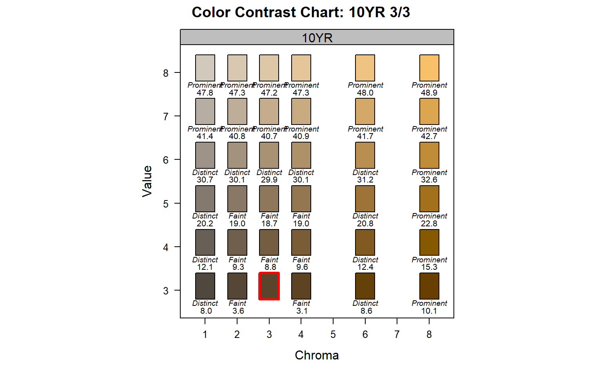
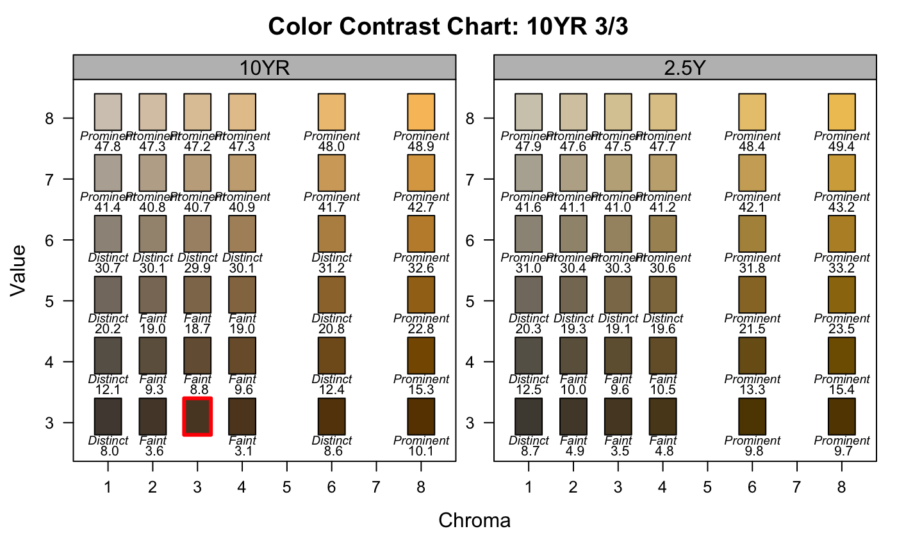
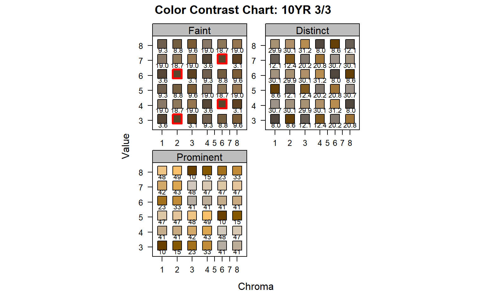
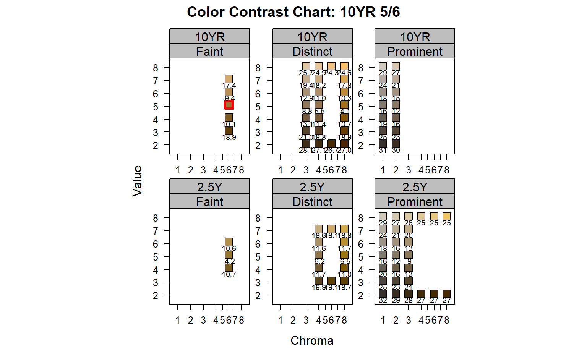

Compare one or more pages from a simulated Munsell book of soil colors to a reference color.
contrastChart( m, hues, ccAbbreviate = 1, style = "hue", thresh = NULL, returnData = FALSE )
| m | Munsell representation of a single color for comparison e.g. '10YR 4/3' |
|---|---|
| hues | vector of one or more Munsell hue pages to display |
| ccAbbreviate | length of abbreviated contrast classes, use 0 to suppress labels |
| style | 'hue' or 'CC', see details |
| thresh | threshold (<) applied to pair-wise comparisons and resulting color chips |
| returnData | logical, return lattice figure + data used to generate the figure |
A simulated Munsell color book page or pages are used to demonstrate color contrast between all chips and the refnerece color m (highlighted in red). NCSS color contrast class and CIE delta-E00 values are printed below all other color chips. Munsell color chips for chroma 5 and 7 are ommitted, but axis labels are retained as a reminder of this fact.
Setting style='hue' emphasises the contrast classes and CIE delta-E00 of chips adjacent to m. Setting style='CC' emphasises adjacent chips according to respective contrast class via lattice panels.
Two-way panels are used when multiple hues are provided and style='CC'. The default output can be greatly enhanced via:
D.E. Beaudette
# single hue page contrastChart(m = '10YR 3/3', hues = '10YR')# contrast class, single hue contrastChart(m = '10YR 3/3', hues = '10YR', style='CC')# contrast class, multiple hues # consider latticeExtra::useOuterStrips() contrastChart(m = '10YR 5/6', hues = c('10YR', '2.5Y'), style='CC')